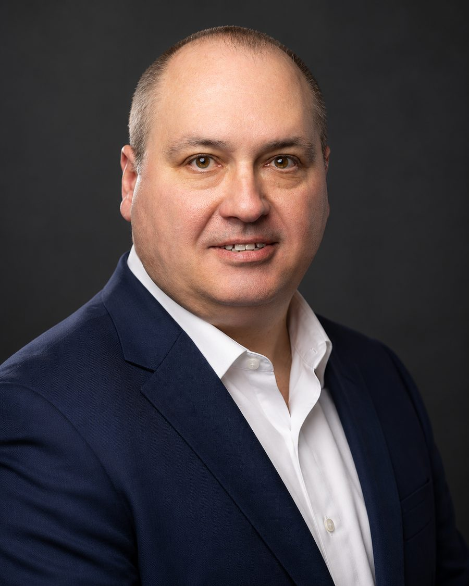
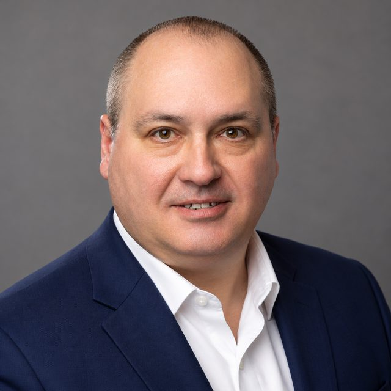

Michael J. Durovic advises insurers and service companies on claims operations, risk management, vendor management and restoration. He has run claims at carrier level, built a claims service organisation, and adjusted losses in the field.
How he works Connect on LinkedIn
Durovic started as a multi line adjuster in New York in 1994 and worked the whole way up: claim specialist at a national carrier, unit supervisor, claim analyst, director of claims, executive vice president of a claims service company, and finally vice president of claims services with a seat on the executive committee of a group of carriers writing across five states.
That range is the point. He has handled the loss, supervised the adjusters, managed the vendors and signed off the strategy, so he can tell quickly whether a claims operation is actually working or only looks like it is.
Durovic consults for insurers, claims organisations and restoration companies. The work sits where claims operations, vendor performance and risk meet.
Field adjusting programmes, mitigation review and the day to day machinery of getting claims handled properly at volume. Built and supervised at carrier and third party administrator level.
Formal training in risk management and insurance at graduate level, applied across catastrophe exposed books in the south east and gulf states.
Selecting, measuring and managing the independent adjusters, contractors and service firms a claims operation depends on, and holding them to standard.
Water mitigation and property restoration practice, including what a policyholder should reasonably expect from a contractor, a subject he has written on directly.
Catastrophe work is where claims operations either hold or fall apart.
Durovic has run field adjusting, mitigation review and vendor performance through storm seasons on personal lines books across Louisiana, Texas, Florida, North Carolina and South Carolina.
A career built in order, starting in the field in New York in 1994.
Independent practice, Davenport, Florida
Advising several clients on risk management, insurance operations, vendor management and restoration.
Slide Insurance Company
Responsible for field adjusting, vendor management and mitigation review. Sat on the executive committee overseeing Lighthouse Property Insurance Corporation, writing in Louisiana, Texas, Florida, North Carolina and South Carolina, and Lighthouse Excalibur in Louisiana.
Pharos Claims Service
Ran operations and claims. The organisation grew from five employees to roughly seventy over his tenure.
Prepared Insurance Company
Handled complex claims and introduced claims handling practice intended to lift both efficiency and policyholder outcomes.
Lighthouse Property Insurance Corporation, Orlando
Carrier side claims leadership on a catastrophe exposed personal lines book.
American Integrity Insurance Company
Evaluating and processing claims, and checking handling against industry standards.
Cunningham Lindsey
Managed adjuster teams, with a hand in training and development.
State Farm Insurance, Albany branch
Risk assessment and policyholder handling at one of the largest carriers in the country.
Fort Orange Claims Unlimited Services, Newburgh, and Arbitrage Adjusting Services, Rochester
Where it started. Losses adjusted in the field across multiple lines.
Three degrees, ten insurance designations and an active membership of the Chartered Property Casualty Underwriter Society.

Michael J. Durovic consults from Davenport, Florida, and works with clients across the south east and gulf states. The quickest route is a direct message on LinkedIn.
Message on LinkedIn